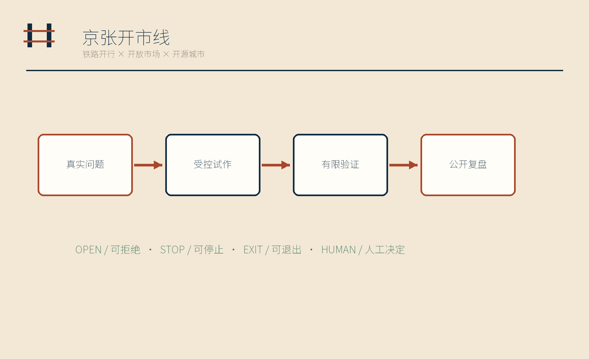
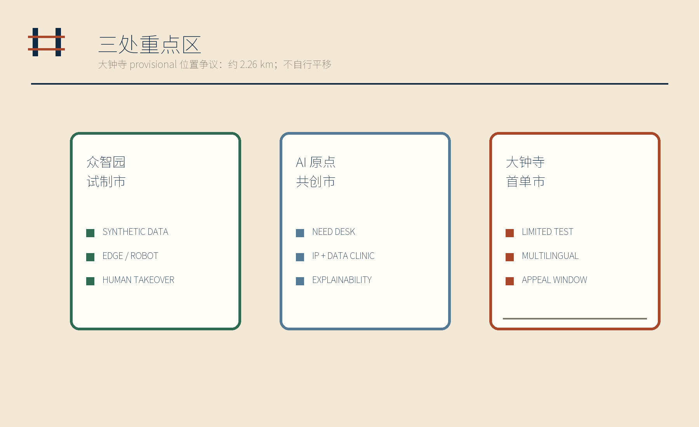
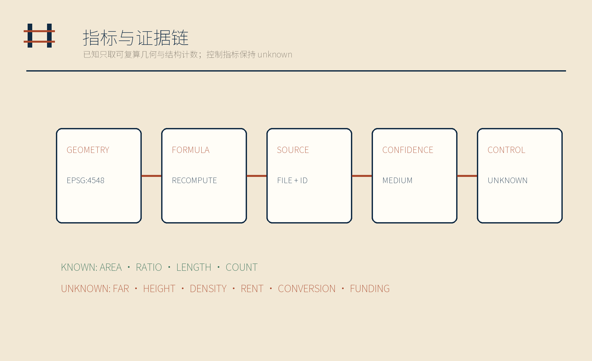
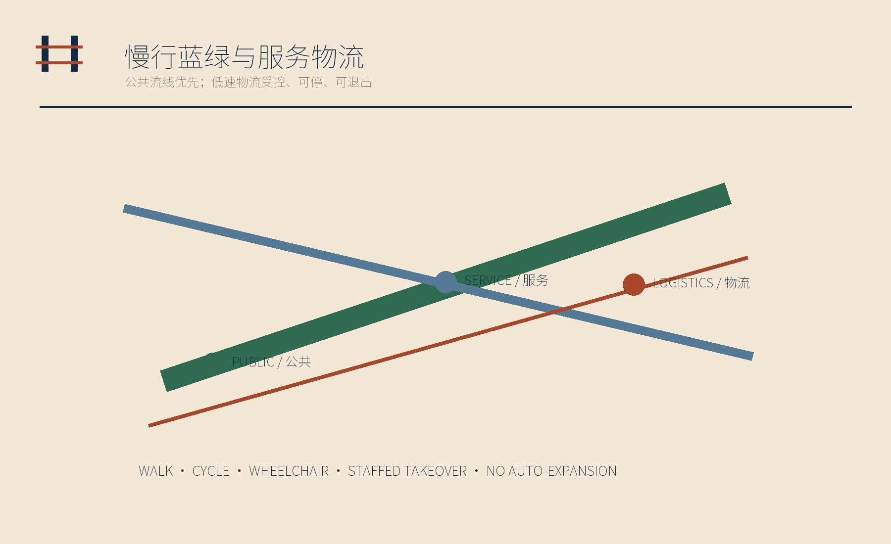

试制市
合成数据 · 边缘设备 · 人工接管
小店的真问题，城市的公开试验线

合成数据 · 边缘设备 · 人工接管
需求台 · 企业诊所 · IP 与数据
限量验证 · 多语服务 · 人工申诉

总览地图 · 三层范围 · 重点区域 · 用地分区 · 交通慢行 · 蓝绿公共空间 · 建筑 · 更新项目 · AI 场景 · 核心指标 · 任务覆盖 · 自检状态 · 来源 · 假设
提交几何面积、比例、长度；十二铺、七类人物、四处纪念节点。
11,412,825.386 sqm
green 15.5207%
public 9.1112%
FAR · HEIGHT · DENSITY · SHOP COUNT · RENT · CONVERSION · FUNDING

大钟寺临时重点区图斑与大钟寺站之间存在约 2.26 km 的公开位置差异；本方案不自行平移。官方边界发布后，几何、指标、图件、网页和 PDF 全链重算。
